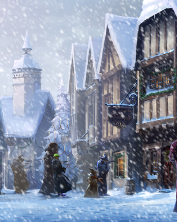

Feel Free to Ask Any Questions on hogwarts.school@gmail.com
Hogwarts School of Witchcraft and Wizardry
Campus Life

Great Hall
Place for the meals
The Great Hall in the Hogwarts Castle was the main gathering area in the school, which was located off the Entrance Hall. It was a large hall where students and teachers dined and congregated. Three meals a day were hosted in this hall. The Great Hall was the main place where students received their meals and daily owl post. They also held certain special events, such as the Sorting ceremony, and the Hallowe'en Feast. The large hall had enough space to hold every student, as well as the main staff and guests. The Hall had tall walls that reached up to the ceiling, which was covered with floating candles and enchanted to look like the sky above. At the front of the hall was the staff table, also known as the High Table, which was designed to house the entire Hogwarts staff. In the centre of the table was a throne chair where the present Headteacher sat. At the left of the table was a door which led to a chamber with portraits. The Great Hall had also held many important events, such as the defeat of Lord Voldemort at the hands of Harry Potter, ending the Battle of Hogwarts and the climatic end of the Second Wizarding War.

The Forbidden Forest
The Forbidden Forest or The Black Forest
The Forbidden Forest, also known as the Dark Forest, bordered the edges of the Hogwarts School of Witchcraft and Wizardry grounds. The forest was a very old place that held many secrets and houses many creatures, some dark and dangerous, others friendly. The trees in the forest were considered ancient, they were dense and rough looking from years of exposure to the elements. As the forest's name suggests, it was strictly off limits to students — except in the case of detention, or Care of Magical Creatures lessons that occasionally took place there. Of course, with the various dangerous creatures living in the Forest, few students would even want to venture into it.

The Hogwarts Library
The Hogwarts Library
The Hogwarts Library was located off of a corridor on the first-floor of Hogwarts Castle and contained tens of thousands of books on thousands of shelves. Overseen by Madam Irma Pince, the library was where students could go to peruse or borrow books to supplement their studies (or for personal enjoyment). The library closed at 8:00 pm.
Achievements of Hogwarts School of Witchcraft and Wizardry
Hogwarts School of Witchcraft and Wizardry was the winner of the Triwizard Tourtnament held in 1994
Despite Cedric's death, Harry was recorded as the official winner of the Tournament and given the thousand Galleons prize money; there was originally supposed to be an award ceremony, which was cancelled due to the circumstances. He attempted to give it to Cedric's parents, but they refused it. In the end, he gave the money to Fred and George Weasley, who used it to establish Weasleys' Wizard Wheezes.
Hogwarts School of Witchcraft and Wizardry is known to be the Safets Place in the entire world
“Gringotts is the safest place in the world for something you wanted to hide — except perhaps Hogwarts.” this was a quote said by Rubeus Hagrid to Harry Potter
what’s new at Hogwarts?
-
Hogsmede Weekends
Hogsmeade weekend trips are special trips that the students at Hogwarts School of Witchcraft and Wizardry could take on certain weekends to Hogsmeade village.
-
Proper magical protection charms

Due to the return of Lord Voldemort, Hogwarts will be protected by the most powerful protective charms!
Our Alumni

Hermione Granger
Hermione Granger
Minister Hermione Jean Granger (b. 19 September, 1979) was an English Muggle-born witch born to Mr and Mrs Granger. At the age of eleven, she learned about her magical nature and was accepted into Hogwarts School of Witchcraft and Wizardry. Hermione began attending Hogwarts in 1991 and was Sorted into Gryffindor House. She possessed a brilliant academic mind and proved to be a gifted student in almost every subject that she studied.
Learn More
Harry Potter
Harry Potter
Harry James Potter is a fictional character and the titular protagonist in the Harry Potter series. The majority of the books' plot covers seven years in the life of the orphan Harry, who, on his eleventh birthday, learns he is a wizard. Thus, he attends Hogwarts School of Witchcraft and Wizardry to practise magic under the guidance of the kindly headmaster Albus Dumbledore and other school professors along with his best friends Ron Weasley and Hermione Granger. Harry also discovers that he is already famous throughout the novel's magical community, and that his fate is tied with that of Lord Voldemort – the internationally feared Dark Wizard and murderer of his parents, Lily and James. The book and film series revolve around Harry's struggle to adapt to the wizarding world and defeat Voldemort.
Learn More